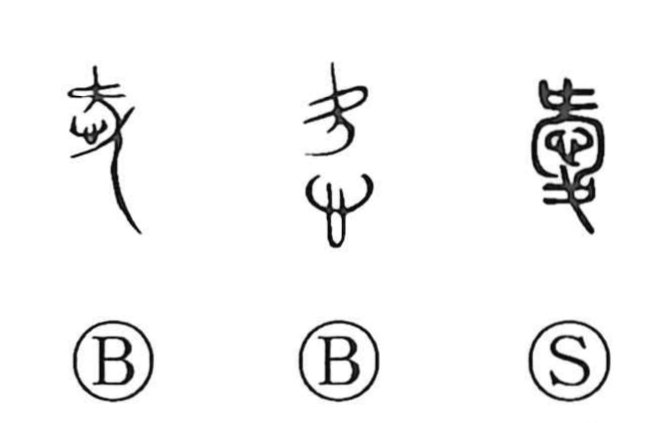

愛

Kun: itoshii, itoshimu, mederu, kanashi | On: ai
love ・ affection ・ to cherish ・ to care for
Explanation
愛 places 心, the heart, within a figure pausing and looking back. The person is about to leave, but the heart is drawn toward those remaining behind. The body’s departure and the backward pull of feeling are held together in the graph.
This lingering concern gives affection, tenderness, and the wish to cherish or protect someone. Japanese kanashi could express that feeling: the beloved person remains on the mind, and parting carries sorrow with it.
From the heart left with another come love and fondness more generally, as well as reluctance to lose or part with something valued. Related words for dim or clouded states preserve the hesitant, indistinct quality of a feeling that is not easily released.